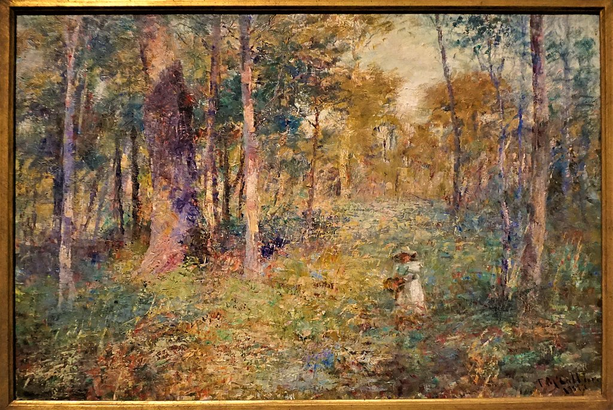

<head>
<meta charset="UTF-8" />
<meta name="keywords" content="drawing, painting" />
<meta name="description" content="drawings by Sunjy" />
<title>Sunjy</title>
<link rel="shortcut icon" type="image/x-icon" href="../../mImages/mCommon/favicon.ico" media="screen" />
<link rel="stylesheet" type="text/css" href="../../mCsses/mCommon/mCssA.css" />
<link rel="stylesheet" type="text/css" href="../../mCsses/mCommon/mCssB.css" />
<link rel="stylesheet" type="text/css" href="../../mCsses/mCommon/mCssC.css" />
<link rel="stylesheet" type="text/css" href="../../mCsses/mCommon/mCssD.css" />
<link rel="stylesheet" type="text/css" href="../../mCsses/mContent/mCssA.css" />
<link rel="stylesheet" type="text/css" href="../../mCsses/mContent/mCssB.css" />
<link rel="stylesheet" type="text/css" href="../../mCsses/mContent/mCssC.css" />
<link rel="stylesheet" type="text/css" href="../../mCsses/mContent/mCssD.css" />
</head>
<script type="text/javascript" src="../../mScripts/mContent/mContentAA.js" /></script>
<script type="text/javascript" src="../../mScripts/mContent/mContentAB.js" /></script>
<script type="text/javascript" src="../../mScripts/mContent/mContentAC.js" /></script>
<script type="text/javascript" src="../../mScripts/mContent/mContentAD.js" /></script>
<script type="text/javascript"></script> 
<script type="text/javascript">
document.write('<div class="mImgAbsolute"></div>');
/*
document.write('<p class="mFontSizeBColor" />From a white paper...</p>');
document.write('<table class="center"><tr><td>');
document.write('');
document.write('</td></tr></table>');
*/
</script>


<script type="text/javascript">
document.write('<p class="mFontSizeBColor" />Child in The Bush</p>');
document.write('<p class="mFontSizeSColor" />“Child in The Bush” by Frederick McCubbin is a painting that revisited a central theme in McCubbin’s work which focused on narratives of vulnerable children stranded in the Australian Bush.<br><br>This painting depicts a girl wandering through the bush carrying a basket, collecting wildflowers, or berries. Her white dress stands out in her surroundings.<br><br>The landscape in this painting was close to McCubbin’s residence at Mount Macedon in Victoria, Australia, and the child in the image was the artist’s youngest daughter.<br><br>McCubbin made skillful use of a palette knife to apply flecks of green, blue, and tan, pink, and violet colors. <br><br>McCubbin was an Australian painter and prominent member of the Heidelberg School art movement, also known as Australian Impressionism.<br><br>Lost Child in The Bush<br><br>Anxieties about lost children go back to the oldest fairy stories, such as Little Red Riding Hood, Hansel, and Gretel, Snow White. The theme of the lost child has been an obsession in Australian art since the beginning of the white settlement.<br><br>Many of Australia’s writers in the 19th century had attempted a “lost child story.” Henry Lawson, a favorite Australian writer and bush poet, is just one Australian author who wrote several stories about children’s misadventures in the Australian Bush. <br><br>A true story from 1891 inspired the following poem.<br><br>Speak their names in tones that linger, just as though you held them dear;<br>There are eyes to which the mention of those names will bring a tear.<br>Little Kate and Bridget, straying in an autumn afternoon,<br>Were attracted by the lilies in the water of Walloon.<br><br>All is dark to us. The angels sing perhaps in Paradise<br>Of the younger sister’s danger, and the elder’s sacrifice;<br>But the facts were hidden from us, when the soft light from the moon<br>Glistened on the water-lilies o’er the Babies at Walloon.<br><br>“The Babies of Walloon” by Henry Lawson, 1891<br><br>Like the majority of Australians, Lawson lived in a city, but he had experience in outback life, many of his stories reflected his experiences in real life.<br><br>This poem from Lawson also comes back to the theme of “The Babies in the Bush” from 1899.<br><br>The mother waits ‘neath the noon-tide glare, <br>And under the midnight skies, <br>Till the wild fixed look of a life’s despair <br>Comes into her hopeless eyes. <br>But the strong man kneels by her side and turns <br>Her face from the clearing bare, <br>To the stars above, with a husband’s love — <br>And “Our bush-lost babes are there!”<br><br>And she sings in her heart of a fairy bright, <br>Of a spirit, the bell-birds know, <br>To guide the feet of the lost aright <br>And lead them on to a land of light <br>Where the bush-lost babies go.<br><br>The Babies in the Bush by Henry Lawson, 1899<br><br><br>Australian Impressionism<br><br>During the 1870s and 1880s, European artists immigrated to Australia and brought their experience of Plein–air movement to Australia.<br><br>Through their work and teaching, they made significant contributions to the development of Impressionism in Australia. Drawing on naturalist and impressionist ideas, they sought to capture Australian life, the bush, and the sunlight of the country.<br><br>In French Impressionism, colors were painted with more explosive energy and with more pure primary and secondary tones for complementary contrasts.<br><br>Australian Impressionists tended to show Australian tones of dry soil, eucalypt woods, and sand, with the dabbling of warm and cold colors.<br><br>Australian Impressionism is notable for its compositions of Australia’s cultural heritage.<br><br>During the period after Australia’s Federation in 1901, Australian nationalism and Australian Impressionists provided works that have become icons of a passing Australia.<br></p>');
document.write('<table class="center" /><tr><td>');
document.write('<br>This painting depicts a girl wandering through the bush carrying a basket, collecting wildflowers, or berries. Her white dress stands out in her surroundings.<br><br>The landscape in this painting was close to McCubbin’s residence at Mount Macedon in Victoria, Australia, and the child in the image was the artist’s youngest daughter.<br><br>McCubbin made skillful use of a palette knife to apply flecks of green, blue, and tan, pink, and violet colors. <br><br>McCubbin was an Australian painter and prominent member of the Heidelberg School art movement, also known as Australian Impressionism.<br><br>Lost Child in The Bush<br><br>Anxieties about lost children go back to the oldest fairy stories, such as Little Red Riding Hood, Hansel, and Gretel, Snow White. The theme of the lost child has been an obsession in Australian art since the beginning of the white settlement.<br><br>Many of Australia’s writers in the 19th century had attempted a “lost child story.” Henry Lawson, a favorite Australian writer and bush poet, is just one Australian author who wrote several stories about children’s misadventures in the Australian Bush. <br><br>A true story from 1891 inspired the following poem.<br><br>Speak their names in tones that linger, just as though you held them dear;<br>There are eyes to which the mention of those names will bring a tear.<br>Little Kate and Bridget, straying in an autumn afternoon,<br>Were attracted by the lilies in the water of Walloon.<br><br>All is dark to us. The angels sing perhaps in Paradise<br>Of the younger sister’s danger, and the elder’s sacrifice;<br>But the facts were hidden from us, when the soft light from the moon<br>Glistened on the water-lilies o’er the Babies at Walloon.<br><br>“The Babies of Walloon” by Henry Lawson, 1891<br><br>Like the majority of Australians, Lawson lived in a city, but he had experience in outback life, many of his stories reflected his experiences in real life.<br><br>This poem from Lawson also comes back to the theme of “The Babies in the Bush” from 1899.<br><br>The mother waits ‘neath the noon-tide glare, <br>And under the midnight skies, <br>Till the wild fixed look of a life’s despair <br>Comes into her hopeless eyes. <br>But the strong man kneels by her side and turns <br>Her face from the clearing bare, <br>To the stars above, with a husband’s love — <br>And “Our bush-lost babes are there!”<br><br>And she sings in her heart of a fairy bright, <br>Of a spirit, the bell-birds know, <br>To guide the feet of the lost aright <br>And lead them on to a land of light <br>Where the bush-lost babies go.<br><br>The Babies in the Bush by Henry Lawson, 1899<br><br><br>Australian Impressionism<br><br>During the 1870s and 1880s, European artists immigrated to Australia and brought their experience of Plein–air movement to Australia.<br><br>Through their work and teaching, they made significant contributions to the development of Impressionism in Australia. Drawing on naturalist and impressionist ideas, they sought to capture Australian life, the bush, and the sunlight of the country.<br><br>In French Impressionism, colors were painted with more explosive energy and with more pure primary and secondary tones for complementary contrasts.<br><br>Australian Impressionists tended to show Australian tones of dry soil, eucalypt woods, and sand, with the dabbling of warm and cold colors.<br><br>Australian Impressionism is notable for its compositions of Australia’s cultural heritage.<br><br>During the period after Australia’s Federation in 1901, Australian nationalism and Australian Impressionists provided works that have become icons of a passing Australia.<br>" />');
document.write('</td></tr></table>');
</script>


